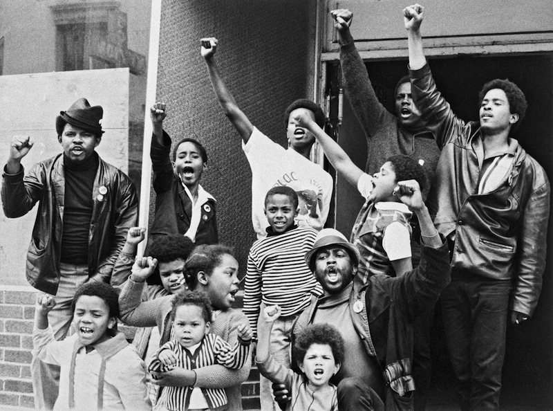
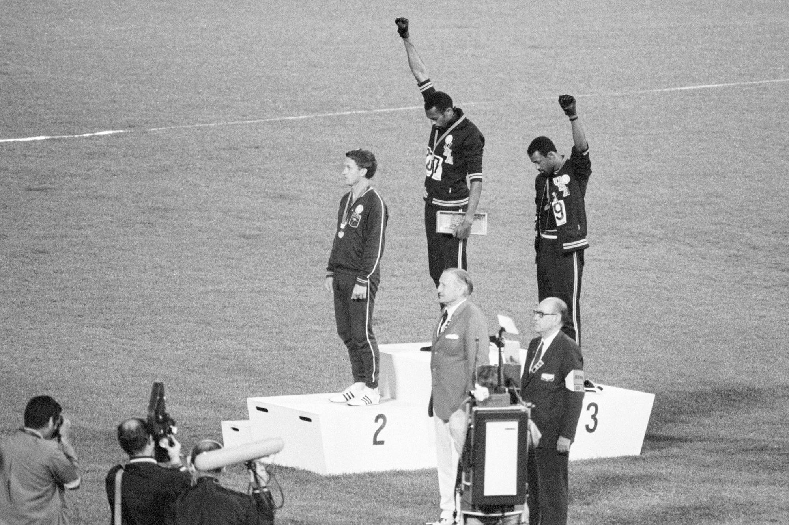

Independently of the liberal, integrationist civil rights leadership, radicals took “Black Power” into American industry, helping to trigger a national strike wave that involved a significant minority of both Black and white workers.
The strike activity demonstrated that a united struggle of Black and white workers against their employers was possible even in a highly polarized racial climate that saw liberal Democrats—both Black and white—join the chorus of racists who condemned the Black Power movement.
The strike wave of the late 1960s coincided with the most militant phase of the Black Power revolt. Rank-and-file activity was central to the movement.
In 1967, 14 percent of all union contracts were rejected by the membership at least once, a trend called “alarming” by the American Management Association. A Uniroyal executive advised managers to help union officials “sell” settlements to the rank and file, but warned that this must be done “subtly.”
Many of the militant Black workers involved in these strikes got their first experience of struggle in the streets, confronting police and troops in the rebellions that swept every major U.S. city from 1964–67. Rejecting the liberal Democrats who told them to patiently await job programs and improved housing, millions of Black workers turned to an explicitly radical nationalist set of ideas and activities.
Although Black workers were largely excluded from craft unions, especially the building trades, Black labor had become increasingly important to basic industry in the post-Second World War era.
A 1970 study estimated that Black worker comprised 20 percent for the membership in the AFL-CIO’s largest unions. Much of this Black membership was concentrated in industrial unions strong in the Northeast and Midwest. Between 1960 and 1968, the proportion of nonwhites working in the auto industry rose from 9 percent to 14.8 percent.
These industry-wide figures do not reflect the concentration of Black workers in certain urban union locals. For example, United Auto Workers (UAW) officials estimated in 1968 that nearly half the autoworkers in the Detroit metropolitan area were Black—an increase of 30 percent from 1963.
So it was not surprising that the most politically advanced of the Black union caucuses emerged in Detroit at the Dodge Revolutionary Union Movement (DRUM). DRUM was not just a powerful network of militant Black autoworkers, but an explicitly revolutionary organization with the goal of workers’ power.
The DRUM leaders were first exposed to leftist politics in the early 1960s through small socialist study groups. They became active in the Student Nonviolent Coordinating Committee (SNCC) at Wayne State University, and were fairly experienced organizers by the time the first DRUM wildcat strike at Chrysler’s Dodge Main plant in May 1968.
The wildcat, sparked by a speedup of the production line, was supported by a minority of white workers. The target of the young Black militants was not only the employers but a union bureaucracy that limited Black representation in the union hierarchy and even collaborated with the company in keeping Blacks out of skilled positions.
DRUM was an immediate success among Black workers who held most of the unskilled jobs at Dodge Main, an antiquated plan that was declared a fire hazard as early as the 1940s. Similar groups were established at Chrysler’s Eldon Avenue gear and axle plant (ELRUM) and at Ford’s River Rouge plan (FRUM). Within a few months, these RUMs formed the League of Revolutionary Black Workers.
There has been a long tradition of left-wing rank-and-file caucuses in the UAW. But DRUM was different. As one member wrote in Wayne State’s University South Endnewspaper in January 1969, after DRUM activists had gained control of the paper:
DRUM’s scope is not limited to the oppressive situation at Chrysler nor all the plants for that matter. Although most organizing activity will be in the plants, DRUM sees its long-range goal as the complete and total social transformation of the society. This necessarily will take the effort of the whole Black community as well as other progressive sectors of society.
From the employers’ point of view, DRUM was the most threatening workers’ organization it had seen in years. The Wall Street Journal devoted a front-page article to DRUM soon after its first wildcat.
One out of every six jobs in Detroit depended on the auto industry, which was far more important to the U.S. economy than it is today.
The UAW bureaucracy was utterly hostile to DRUM. The union’s “progressive” reputation rested on its verbal support for civil rights and the hiring of a few token Black officials. Union president Walter Reuther called DRUM “racist”; another UAW bureaucrat denounced them as “Black fascists.”
In one incident, the UAW brought in gun-toting goons to intimidate the radicals, and repeatedly refused to defend the militants who were disciplined or fired by the company. Still, the League grew throughout 1969 and 1970. It produced a newspaper for distribution at the plants, set up political discussion groups and opened a bookstore.
In this period, the League played a leading role in Black struggles across Detroit. In order to retain the focus on shop-floor organizing, several League members launched a Detroit branch of the Black Panther Party. This was an attempt to pre-empt the Panthers.
Where the Panthers saw themselves as a revolutionary elite that “served the people,” the League cadre argued that it was the economic and social power of the Black workers themselves that would be decisive in the struggle for Black liberation. The Panthers looked to the alienated “boys on the block” as the revolutionary vanguard; the League made the traditional socialist case that a revolutionary party had to be rooted in the basic industries essential to modern capitalist production.
Since some DRUM members had studied the socialist classics, they could be expected to emphasize the centrality of the working class in the struggle for social change. They could win others to this view because Black workers played an indispensable role in Chrysler’s operations.
The Dodge Main plant, DRUM’s base, turned out virtually all of the axles for Chrysler vehicles at that time. Thus any wildcat strike supported by the majority of the plant’s Black workforce could choke off production at Chrysler’s assembly plants. If such actions were sustained and generalized, the entire U.S. economy would be affected.
The working-class strategy of the League and the Black working class was a clear advance over the vague revolutionary program of the Panthers. But despite its explicit socialist politics and its focus on the workplace, the League never fully escaped the contradictions of Black nationalism. It failed to answer the question: which is the fundamental divide in society—race or class?
Despite the concentration of Black workers in important industries in urban Detroit, they were still a minority in the labor force overall. Organizing beyond the auto plants meant confronting the question of whether or not to organize white workers.
The inability of the League leadership to resolve these questions led to a split in 1971. The nationalists launched the Black Workers Congress (BWC) to unify the Black caucuses developing across the nation; the socialists organized a Communist League (CL), which wanted to build underground “cells” in a few key Detroit plants.
Both approaches were mistaken. Because the BWC shared the Black nationalist assumption that racism was the central divide in society, there was little reason to maintain a specifically working-class organization. The BWC lasted only a few months. The CL survived a good deal longer. But it moved from a correct emphasis on the working class to “workerism”—an exclusive focus on workplace struggle that downplayed political issues such as the Vietnam War and the women’s movement.
Moreover, the CL’s hard-line Maoist politics confused the difference between Black nationalism and socialism. Like the Stalinists of the 1930s, the Maoists of the 1960s held that a separate “stage” of Black revolution was necessarily a first step toward socialist revolution.
In this view, Black workers would have to organize separately until white workers abandoned their “privileges.” DRUM organizer Mike Hamlin put it this way:
Well, you see, Black and white workers work side by side on the line. And it’s clear to Black workers, you know, that the enemy is the boss, is management in the plant. But it’s not always clear to the white worker that his enemy is management.
He might perceive Blacks on the line as a threat to him. And that is generally what happens. They know that they have a degree of privilege as a result of our being there and our being in a subjugated position. So his interest really is not destroying the system, in fighting management, or the boss.
His interest is in maintaining that situation that provides him with the privileges that he has because of his white skin. He has to be willing to give all of that up and fight management.
Despite Hamlin’s perception, statistics show that at Chrysler—birthplace of DRUM and the League of Revolutionary Black Workers—white workers did fight alongside Blacks. From 1960-66, there was an average of 20.4 strikes per year.
The average more than tripled to 63.3 strikes per year during 1967-1973, followed by a decrease to 53 during 1974-78 before plummeting to 13 strikes per year in 1979-85. These figures, which include wildcat strikes, indicate a qualitatively higher level of struggle in the 1967-73 period in which the League was active.
This activity could not have been sustained without involving a large minority of white workers.
This is not to say that white racism disappeared in this period. The racist presidential campaign of George Wallace made big inroads in Michigan Democratic primaries in 1968 and 1972. The point is, the most effective place to overcome the racial divide that Wallace thrived on was in the one integrated sphere of life in the U.S.—the workplace.
If racism had permeated the shop floor, autoworkers would have been unable to challenge the UAW bureaucracy to organize the “wildcat summer” of 1973. Then, Chrysler workers—Black and white—struck at the three plants where the League had organized. In one instance, a squad of 200 union members, led by UAW Chrysler Vice President Doug Fraser, broke up picket lines and forced a return to work.
Even where the level of struggle was much lower, the presence of Black radical caucuses could stimulate some white workers to participate in job actions and oppose the official union leadership.
While the majority-Black workforce in Chrysler’s Dodge Main plant gave DRUM the power to stop production, such action was beyond the Black minority at Fremont. Instead, the caucus concentrated on defending Black workers from racist harassment, running candidates for local union office and studying socialist politics.
Recognizing the limited potential of a Black-only organization, the BWC tried to develop relationships with white workers by encouraging them to form their own caucuses—or inviting them to join the BWC itself.
BWC leaders partially accepted the Maoist concept of “‘white-skin’ privilege.” But by working to forge workplace alliances between the Black minority and the white majority, they came to the conclusion that DRUM rejected; that white and Black workers are both exploited, and must organize together to fight that exploitation.
The views of DRUM’s leaders notwithstanding, its experience reaffirms the socialist argument that Black and white workers have a common interest in fighting for Black liberation and socialism.
As the 1973 wave of wildcat strikes showed, white workers were willing to follow the Black militants’ example in struggle. In this context of the economic battles, it is much easier to make the political case that white workers have a stake in the fight for Black liberation.